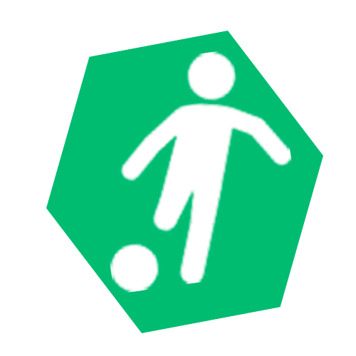

<!DOCTYPE html>
<html lang="es"></html>
<head>
  <meta name="author" content="Arnold Restrepo Hernández, Desarrollador Front-End"/>
  <meta name="description" content=""/>
  <meta name="keywords" content=""/>
  <meta name="" content=""/><!-- Etiquetas meta para posicionamiento SEO -->
  <meta charset="UTF-8"/>
  <meta name="viewport" content="width=device-width, user-scalable=no, initial-scale=1.0, maximum-scale=1.0, minimum-scale=1.0"/>
  <title>Fundación Porvenir y Felicidad</title>
  <link rel="stylesheet" href="css/normalize.css"/>
  <link rel="stylesheet" href="css/unslider.css"/>
  <link rel="stylesheet" href="css/estilos.css"/>
</head>
<body>
  <div id="container">
    <header>
      <div class="hamburguesa"></div>
      <nav>
        <div id="logo">
          <h2 class="__title">Fundación Provenir y Felicidad</h2>
        </div>
        <ul id="menu">
          <li><a href="#nosotros">Nosotros</a></li>
          <li><a href="#programas">Programas</a></li>
          <li><a href="#galeria">Galeria</a></li>
          <li><a href="#padrino">Plan Padrino</a></li>
          <li><a href="#contacto">Contacto</a></li>
        </ul>
      </nav>
    </header>
    <video id="fundacion" src="img/fundacion.mp4" controls="controls" autoplay="autoplay" loop="loop">
      Tu navegador no soporta el elemento video
      <!-- navegacion -->
    </video><!-- Cabecera -->
    <section id="nosotros">
      <article class="__contenido">
        <h1>NOSOTROS</h1>
        <h3 class="__tittle">Misión</h3>
        <p class="__desc">La Fundación Porvenir y Felicidad es una entidad sin ánimo de lucro, comprometida con el bienestar de los niños y las familias del municipio de Mosquera y alrededores,  donde  se brindan   soluciones a las problemáticas de la comunidad a través de redes de apoyo.</p>
        <h3 class="__tittle">Visión</h3>
        <p class="__desc">Las familias pertenecientes a la fundación Porvenir y Felicidad  potencializarán sus habilidades, capacidades y competencias,  con el fin de mejorar su calidad de vida y proyección profesional de los niños y adolescentes fortalecidos en principios y valores. </p>
        <h3 class="__tittle">Objetivo General</h3>
        <p class="__desc">Crear redes de apoyo a través de la Fundación Porvenir y Felicidad con entidades públicas y/o privadas que brinden soluciones a la problemática particular de las familias vulnerables del municipio de Mosquera y alrededores.</p>
        <h3 class="__tittle">Actividades Pedagógicas y Culturales</h3>
        <p class="__desc">En la Fundación Porvenir  y Felicidad  manejamos variedad de cursos con diversas metodologías que rotan durante los días hábiles.</p>
      </article>
    </section><!-- Nosotros --> 
    <section id="programas">
      <div class="banner-programas">
        <ul>
          <li style="background-image: url(img/deporte.jpg)">
            <h2>PROGRAMAS</h2>
            <h3>Deportes y Gimnasia</h3>
            <p>En este curso los niños, niñas y adolescentes, elevan su cuerpo a la máxima expresióndel movimiento, ayudándolos a mejorar sus habilidades motoras básicas, en pro de u desarrollo integral.</p>
            <hr/>
          </li>
          <li style="background-image: url(img/literatura.jpg)">
            <h2>PROGRAMAS</h2>
            <h3>Literatura y Lenguaje</h3>
            <p>Es un espacio en el cual mediante la  lectura de libros, escritura libre y aprendizaje del lenguaje español, los niños cultivan el amor por la literatura y desarrollan herramientas adecuadas de lectura y escritura.</p>
            <hr/>
          </li>
          <li style="background-image: url(img/teatro.jpg)">
            <h2>PROGRAMAS</h2>
            <h3>Artes Escénicas</h3>
            <p>Se instruye a los niños en el desarrollo de habilidades de coordinación, relajación, respiración, expresión corporal, por medio de dramatizaciones, narraciones, títeres y mimos para el manejo de sus relaciones sociales y familiares, además de incentivar métodos para el control adecuado de sus emociones.</p>
            <hr/>
          </li>
          <li style="background-image: url(img/plasticas.jpg)">
            <h2>PROGRAMAS</h2>
            <h3>Artes Plásticas</h3>
            <p>En este curso se encuentran materiales propicios, que permiten  trabajar patrones manuales, tales como el desarrollo de la mano dominante, coordinación viso motora y manejo adecuado de la motricidad fina, con el fin de reforzar habilidades de escritura, además de fomentar la creación de diversas obras de arte que desarrollan su creatividad.</p>
            <hr/>
          </li>
          <li style="background-image: url(img/musica.jpg)">
            <h2>PROGRAMAS
              <h3>Música</h3>
              <p>Este espacio está diseñado para conocer diferentes sonidos, ritmos y melodías a través de la interacción con distintos instrumentos musicales y así despertar el gusto por el arte, promover una interacción cultural y fortalecer valores humanísticos como el respeto, la tolerancia y la paz.</p>
              <hr/>
            </h2>
          </li>
        </ul>
      </div>
    </section><!-- Programas -->
    <section id="galeria">
      <h1>GALERIA</h1>
      <div class="banner-imagenes">
        <ul>
          <li style="background-image: url(img/img1.jpg)"></li>
          <li style="background-image: url(img/img2.jpg)"></li>
          <li style="background-image: url(img/img3.jpg)"></li>
          <li style="background-image: url(img/img4.jpg)"></li>
          <li style="background-image: url(img/img5.jpg)"></li>
          <li style="background-image: url(img/img6.jpg)"></li>
          <li style="background-image: url(img/img7.jpg)"></li>
          <li style="background-image: url(img/img8.jpg)"></li>
          <li style="background-image: url(img/img9.jpg)"></li>
          <li style="background-image: url(img/img10.jpg)"></li>
          <li style="background-image: url(img/img11.jpg)"></li>
          <li style="background-image: url(img/img12.jpg)"></li>
          <li style="background-image: url(img/img13.jpg)"></li>
          <li style="background-image: url(img/img14.jpg)"></li>
          <li style="background-image: url(img/img15.jpg)"></li>
          <li style="background-image: url(img/img16.jpg)"></li>
          <li style="background-image: url(img/img17.jpg)"></li>
          <li style="background-image: url(img/img18.jpg)"></li>
          <li style="background-image: url(img/img19.jpg)"></li>
          <li style="background-image: url(img/img20.jpg)"></li>
          <li style="background-image: url(img/img21.jpg)"></li>
          <li style="background-image: url(img/img22.jpg)"></li>
          <li style="background-image: url(img/img23.jpg)"></li>
          <li style="background-image: url(img/img24.jpg)"></li>
          <li style="background-image: url(img/img25.jpg)"></li>
          <li style="background-image: url(img/img26.jpg)"></li>
          <li style="background-image: url(img/img27.jpg)"></li>
          <li style="background-image: url(img/img28.jpg)"></li>
          <li style="background-image: url(img/img29.jpg)"></li>
          <li style="background-image: url(img/img30.jpg)"></li>
          <li style="background-image: url(img/img31.jpg)"></li>
          <li style="background-image: url(img/img32.jpg)"></li>
          <li style="background-image: url(img/img33.jpg)"></li>
          <li style="background-image: url(img/img34.jpg)"></li>
          <li style="background-image: url(img/img35.jpg)"></li>
          <li style="background-image: url(img/img36.jpg)"></li>
          <li style="background-image: url(img/img37.jpg)"></li>
          <li style="background-image: url(img/img38.jpg)"> </li>
        </ul>
      </div>
    </section><!-- Galeria -->
    <section id="padrino">
      <h2>PLAN PADRINO</h2>
      <h4>Queremos transformar la infancia de nuestros niños y niñas, fomentando en ellos el amor y la educación integral.</h4>
      <p>Dale la oportunidad a niños y niñas de 0 a 18 años.</p>
      <ul>
        <li>   Apoyo Nutricional y crecimiento.</li>
        <li>   Programas de desarrollo personal</li>
        <li>   Protección y prevención </li>
        <li>   Formación en hábitats y valores</li>
        <li>   Fomentar el desarrollo social </li>
        <li>   Entre familias y la comunidad.</li>
      </ul>
    </section><!-- Plan Padrino -->
    <footer id="contacto">
      <h2 class="__title">Haz Contacto con Nosotros</h2>
      <form action="mail.php" method="post" class="__form">
        <div class="columna1"><span>Nombre</span>
          <input type="text" name="nombre" required="required"/><span>Apellido</span>
          <input type="text" name="apellido" required="required"/><span>Teléfono</span>
          <input type="text" name="telefono"/><span>E-mail    </span>
          <input type="text" name="email" required="required"/>
        </div>
        <div class="columna1"><span>Asunto y Comentarios</span>
          <textarea name="com" class="__comentarios"></textarea>
        </div>
        <input type="submit" value="Enviar"/>
      </form>
      <hr/>
      <article class="datos__contacto">
        <p class="datos__des">Dirección: Calle13a N°3-46 Porvenir Rio vía Mosquera</p>
        <p class="datos__des">Email: direcciongeneral@porveniryfelicidad.org</p>
        <p class="datos__des">Contacto: +57 8932807 - +57 3106693369</p>
      </article>
      <h3>Siguenos en Nuestras Redes Sociales</h3>
      <div class="social __instagram"> <a href="#"> </a></div>
      <div class="social __youtube"><a href="#"> </a></div>
      <div class="social __facebook"><a href="#"> </a></div>
      <div class="social __twitter"><a href="#"> </a></div>
    </footer><!-- Contacto -->
  </div><!--  Contenedor General -->
  <script src="js/jquery-3.1.0.min.js"></script>
  <script src="js/unslider.js"></script>
  <script src="js/main.js"></script>
</body>